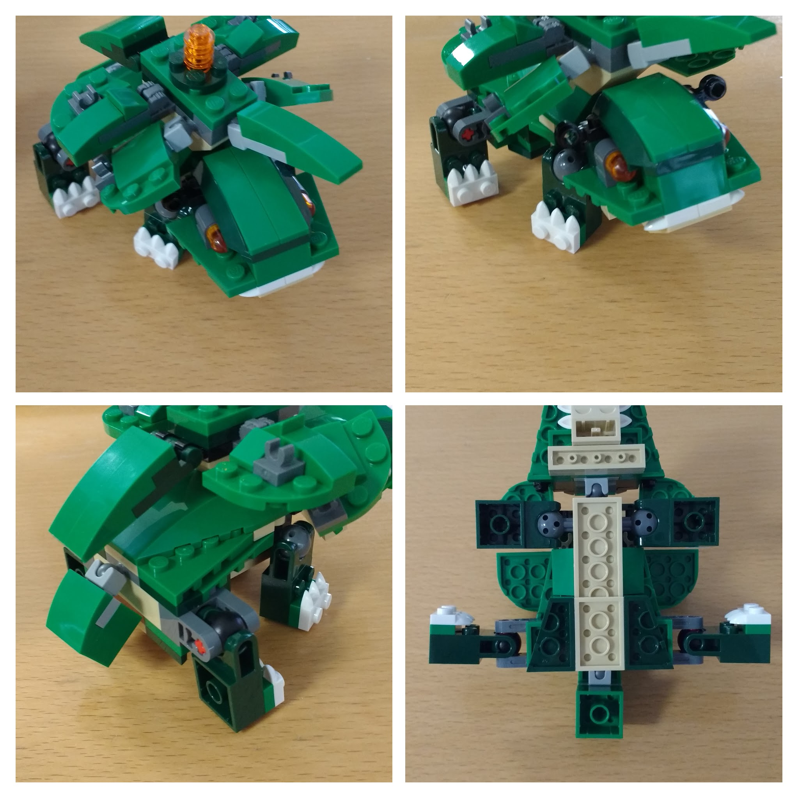
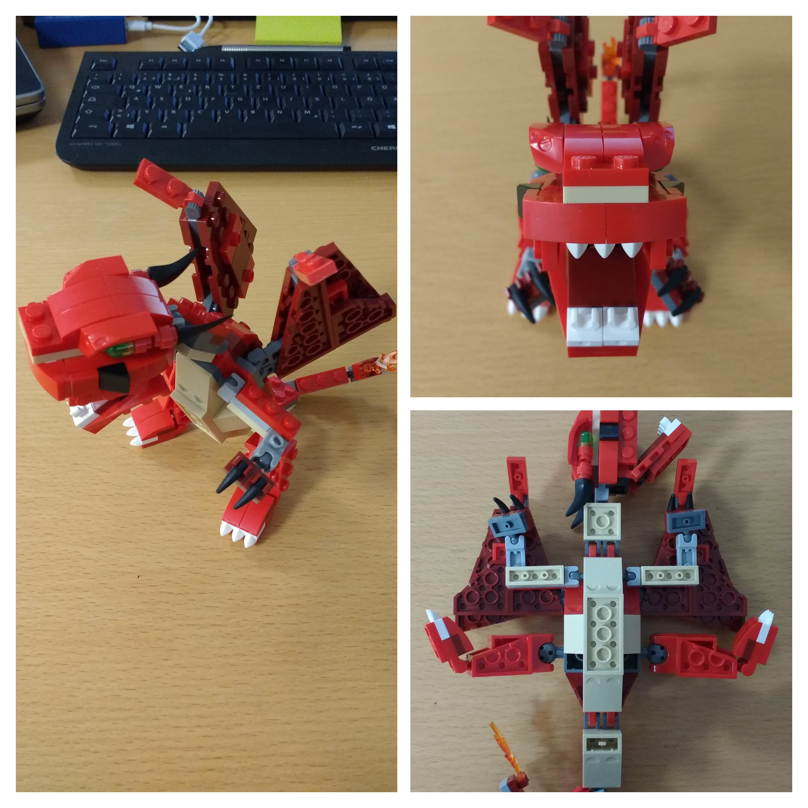
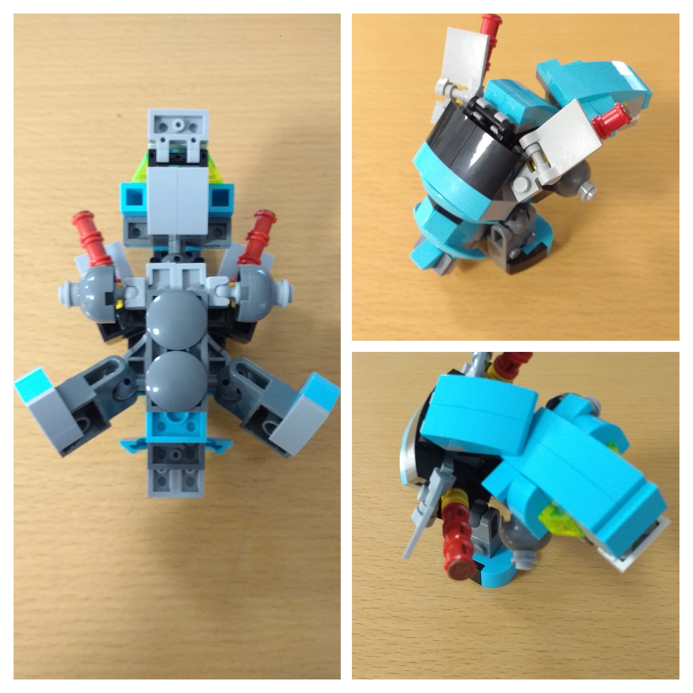
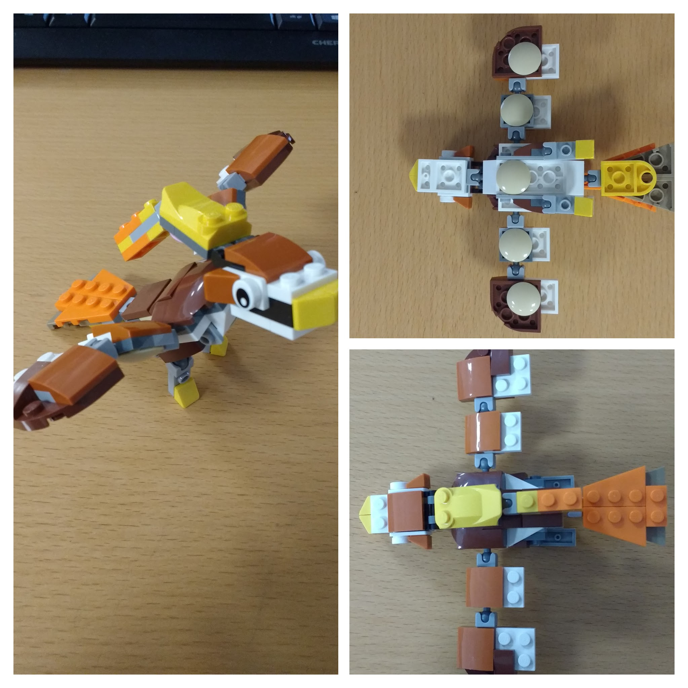

In late 2016 I bought the Lego set "Red Creatures", which sadly is not available anymore. I always liked dragons, so I had to get and build it.
Wandering around in the Lego store I wondered why there is no Pokemon Lego yet. I mean they have made so many deals: Star Wars, Minecraft, Marvel, DC, ... and Pokemon is still targeted mostly at children. So why not join forces?
Anyway, back in 1999 I had built a Blastoise and a Pikachu from simple bricks. Sadly I did not have any camera at that time (not counting the 14336 pixel (!) Game Boy Camera) to record my achievement.
So I had this 15 € "Red Creatures" set, another 15 € set with a dog and a duck (lots of joint and hinge elements - I love those!) But it was not until I bought the relatively new green dinosaur set, I certified just by looking at the box: Yep, this should make a really nice Venusaur (ger.: Bisaflor)! And this time I have a smartphone camera:


(Source, see license, ™ & © Nintendo)
Close enough! Overall it was straight-forward to build and I had lots of fun! By the way, this is the package of the original set:

(Source of the screenshot, © LEGO Group)
Highly motivated I had to build my all-time favorite: Charizard (ger.: Glurak)! I kept the trunk from the "Red Creatures" model, removed the black spikes made from design elements, reduced the head size and simplified legs, arms, tail as well as wings. In my opinion this is even a better, more play-able dragon than the original model (the original wings are way too complicated and hinder you when you actually want to use the model). This is the result:


(Source, see license, ™ & © Nintendo)
FEUER! YEAH!
(The original set again, just for reference:)

(Source of the screenshot, © LEGO Group)
The next day I was on a mission: Find a set to build the third starter Pokemon, Blastoise (ger.: Turtok)! So I looked for more cheap 3-in-1 Lego sets containing some blue bricks. There it was:

(Source of the screenshot, © LEGO Group)
Just looking at the set, I knew it would be a challenge to build Blastoise. The more so, I was pleased with the result:

But it has most features of the real Blastoise like movable cannons!

(Source, see license, ™ & © Nintendo)
Being in a flow state I created another Pokemon: Pidgeot (ger.: Tauboss)!

(Source, see license, ™ & © Nintendo)

From this set:

(Source, © LEGO Group)
Technically one should be able to build any brown-whitish Pokemon from this set. Feel free to email me or drop a comment, if you have any ideas or suggestions!
So why should anyone bother building Pokemon?
Well, this "exercise" could be seen as a training for the following skills:
{kind=link}
{kind=link}
{kind=link}
{kind=link}